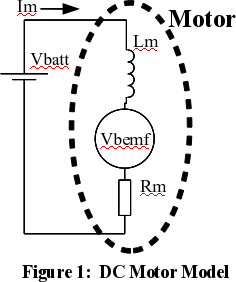
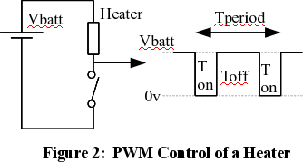
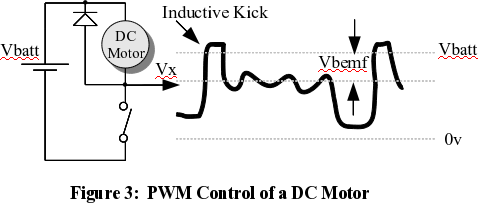
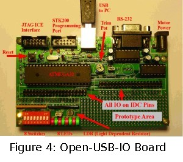
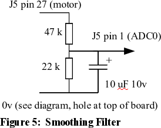
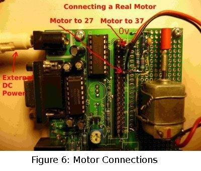

Controlling DC Motors from your Linux Box
Linux and Hardware
Linux is the best general purpose operating system for controlling hardware. It allows fast and well-controlled access to Input/Output ports such as the parallel port and serial port as well as plug in cards. The Linux Gazette has two good articles on how to achieve this, see [1] and [2]. If you need real time response, consider the RTAI extension of Linux, again Linux Gazette has some very useful articles that use RTAI to achieve motor control [3], make a stroboscope [4], and use a joy-stick to control servo motors [5] .
Many of these approaches rely on direct access to ports such as the parallel port, but this is becoming increasingly difficult as laptops and newer desktops rely on USB as the sole input-output (IO) mechanism. Hardware access via USB requires a plug-in USB module that translates USB to basic digital IO, and if possible analogue IO. These boards are relatively cheap, starting from about US$35. It's also possible to build your own USB interface based on Open Source designs such as VUSB [6] .
In this article we will show you how to use a very flexible USB interface board called Open-USB-IO [7] to achieve speed control of a DC motor without any form of shaft encoder. Open-USB-IO provides a lot of options for a very reasonable price. Notable hardware interfaces include digital IO with switches and LEDs, analogue inputs, three channels of PWM (Pulse Width Modulation), a serial port, and seven open collector drivers for motors. The USB stack is written in C that runs on an ATMEGA32 microprocessor; remarkably, you can add your own code to the USB code and then use a symbolic debugger to debug that code. Open-USB-IO hardware can thus be controlled from code running on the Linux box as we will do in this article, or from code that runs on the ATMEGA32 microprocessor (if we get enough requests to the editor I will write an article showing how to write and debug code on the microprocessor from the Linux environment). The web site also has an extensive manual with many examples, and the full circuit of the board.
DC Motor Basics
 There is a wide variety of DC motors; see Wikipedia [8] for a good overview. We will be dealing with the permanent magnet type which is the most common DC motor for small applications. The model of a DC motor at stable speed is shown in Figure 1. It's quite simple - if you can remember Ohms Law, then you can understand it. The voltage across the motor must match the battery voltage and at a steady speed this is made up out of two parts: the first is the resistance losses through the motor equal to Im*Rm. The second part is caused by the spinning rotor acting as a generator which creates a voltage that opposes the battery. This voltage is often called the back-EMF (Vbemf) of the motor and is directly proportion to speed.
Vbatt = Im * Rm + Vbemf (1) Vbatt= battery voltage
Vbemf = k * motor_speed (2) Rm = motor resistance
Motor Torque = c * Im (3) Vbemf = back emf of motor
Im = motor current
k,c = constants
When the motor starts it will speed up until the Vbemf rises and together with Im*Rm balances Vbatt. If the motor has a mechanical load applied then it will slow down until a new balance is reached, the current must increase so the back-EMF drop is matched by a rise in the Im*Rm voltage drop. The increased current will increase the torque of the motor to cope with the new mechanical load.
Given the formulas above it's possible to work out the speed of the DC motor using just electrical measurement, thus no shaft encoder is required. There are two basic approaches -
motor_speed = ( Vbatt - Im*Rm) / k (4) motor_speed = Vbemf/k (5)
Formula 4 requires measurement of the motor current, formula 5 requires measurement of the back-EMF of the motor. On first inspection measuring motor current looks easiest, simply add a very small resistor Rs in series with the motor and measure the voltage drop Vs across that resistor. The motor current is simply Vs/Is. However, this has the disadvantage of wasting energy, requiring amplification and measurement of very small voltages, and requires a high current, low value resistor. Measuring the back-EMF of the motor would not have these problems - but there is no point where back-EMF can be directly measured when the motor is driven with a steady voltage. Fortunately, the back-EMF can be measured when a motor is driven with PWM (Pulse Width Modulation).
To see a more complete treatment of a DC motor and a good SPICE model, see http://www.ecircuitcenter.com/circuits/dc_motor_model/dcmotor_model.htm.
Pulse Width Modulation (PWM)
 Pulse Width Modulation, usually abbreviated to just PWM, is a clever way to create a low voltage from a high voltage without any losses. Figure 2 shows a simple PWM waveform where a battery is driving a heater element, with an active duty cycle of Ton / Tperiod. The heater has a thermal inertia, so the heat output will not vary in response to the fast on and off pulses. This inertia averages the out the pulses to give an effective voltage of Vbatt * Ton / Tperiod. A load like a heater or a motor can be given a variable voltage just by using a switch opening and closing at high speed. This approach is much better than using a voltage regulator or series resistor, as there is no energy loss.
 Figure 3 shows the waveform of a motor driven by a PWM. When the switch disconnects the motor, the voltage measured at Vx is not Vbatt, it is reduced by the back-EMF of the motor. PWM not only allows a variable voltage to be fed to the motor, it gives the opportunity to directly measure the motor back-EMF for the purposes of speed control. The waveform at Vx is far from perfect for our needs. When the switch first turns off the motor's stray inductance gives a voltage kick, typically 0.5 milliseconds for a small motor. After the inductive kick has finished, the back-EMF is not smooth and has considerable noise. This waveform needs to be smoothed out in some way to give a single measurement for Vbemf over one cycle. When the switch is turned on, again the result is not perfect: Vx is not zero volts because all real switches have a finite resistance. For a mechanical switch this is very low but for electronic switches this will be noticeable and must be taken into account.
Why is there a diode across the motor? A motor is a an inductor, and inductors can generate a huge voltage spike if the current through them is suddenly turned off. This spike can be hundreds of volts and destroy the switching device. The diode allows the current to continue to flow in a loop through the inductor while the switch is turned off. This is shown in figure 3 as Vx rises above Vbatt by the voltage drop across the diode.
Motor speed can be estimated as follows-
Average_Vm = (Vbatt-Vbemf) * Poff + Von * Pon (6)
Poff = proportion of time switch is off = Toff/Tperiod, 0-1.
Pon = proportion of time switch is on = Ton/Tperiod, 0-1.
Von = voltage across switch when turned on, caused by internal switch resistance.
Vbemf = Vbatt - (Average_Vm - Von*Pon)/Poff (7)
The back-EMF, Vbemf, can be taken as a proxy for speed as the speed is directly proportional to this value. The Average_Vm can be created by continually sampling Vm at high speed and taking an average, or by using a low pass filter to create a stable voltage. We will use the second approach as shown in Figure 5 because USB interfaces generally work at low speed, around 250 commands a second at best and its not possible to sample fast enough to be certain of getting a reliable value.
Open-USB-IO and PWM
 The Open-USB-IO board, shown in Figure 4 opposite, comes with a command line program that allows you to control all the hardware features of the board from the comfort of your Linux computer. Common features such as PWM are very easy to use. Download the "ousb" program from this website and place it in your path; /usr/local/bin is convenient if you have root privileges.
To demonstrate the PWM function, we will use PWM 1 which lights LED 3 at various light intensities. In the commands below note that the # and beyond are comments, and do not need to be typed in.
ousb pwm-freq 1 45 # set PWM 1 frequency to 45 Hz. ousb pwm 1 2 # set PWM duty cycle to 2% on. ousb pwm 1 100 # PWM 1 is 100%, always on. ousb pwm 1 0 # PWM is 0%, always off.
Note that the pwm-freq command must be used first to set frequency but after that any number of pwm commands can be used to change the duty cycle.
The Open-USB-IO board has many useful features, one of which is seven open collector drivers that can cope with up to 50 volts, and carry up to 500 milliamps, enough for most small DC motors. Open collector drivers act as a switch connected on one side to zero volts, just as in the circuits above. One of these is controlled by PWM 1 and can be used to drive a small motor. There are eight ADC (Analogue to Digital Converter) inputs and one of these, ADC0, will be used to sense the motor voltage. The USB link to the computer supplies 5 volts, and can in theory be used to drive a small motor. In practice the motor injects a lot of electrical noise to the power supply and this can crash the microprocessor, so it's best to use an external plug-pack that plugs into the external socket (top right of Figure 4). The plug pack can be either unregulated or regulated, as long as it is rated at up to about 1.5 times the motor voltage. If you're an electronics experimenter, there is a good chance that you have one of these in your junk box.
 One thing that Open-USB-IO lacks is a low pass filter to smooth out the noisy motor voltage as shown in Figure 3. Luckily, the board has a prototype area that can easily fit the necessary components. Figure 5 shows the circuit of a simple smoothing filter and figure 6 shows how it can be wired into the prototype area. The smoothing filter drops the observed voltage by about 1/3, which allows the motor to be driven by up to 15 volts without overloading the 5 volt powered microprocessor and ADC input. The 47kΩ resistor also gives some protection to the ADC input in case of voltage spikes when the switch turns off and the inductive kick occurs. The corner frequency is about 1 Hertz, so it will smooth out the 45 Hertz PWM waveform to a reasonably stable voltage. The capacitor will need to be an electrolytic which is polarized, and its plus side must be connected to the resistor joint and not zero volts.
 Figure 6, opposite, shows a small motor bolted onto the Open-USB-IO board for convenience. The connections needed for the circuitry are all on J5, the 20 by 2 IDC pin array at the top of the board. All even pins, the left hand row, are connected to zero volts and all the right hand row have useful connections. Each of the right hand row pins is also connected to a solder pad right next to the pin. This makes it easy to solder in your own circuitry. The motor leads are soldered to 2-pin headers which can be pushed onto J5. The zero volt connection is at the top of the board and is connected to the 22kΩ resistor and 10µF capacitor. The 47kΩ resistor connects to the other end of the resistor and capacitor just mentioned and on to pin 27 of J5. The joint of all three components has a wire running down to pin 1 of J5 which is ADC0. This photo has a 1 kΩ resistor between pins 37 and 27, which is not needed for this application.
Be careful with the connections as pin 27 and 37 will have the plug pack voltages which are probably well over 5 volts. If these pins are accidentally connected to the wrong place then damage may be done to the 5 volt powered devices on the board.
Linux Code
The complete C++ code to implement motor control can be found here. Below, key elements of the code will be discussed.
The code in Figure 7 allows any C++ program to directly access the Open-USB-IO board by calling the ousb program. If you prefer C, then please see the extensive Open-USB-IO manual at www.pjradcliffe.wordpress.com . The function opens a pipe to a newly created ousb process and sends it the text string of commands passed in with str. The ousb process then finishes and returns a result, which is converted into an integer and returned to the calling code. The extra "-r" in the ousb command tells ousb to just return the numerical result and omit any useful text description. This is ideal when ousb is called from other programs and not a human using the command line.
Figure 7: C++ Function to Control USB Hardware
int cpp_do_ousb_command(string *str)
{ FILE *fpipe ;
if ( !(fpipe = (FILE*)popen(str->c_str(),"r")))
{ cout << "pipe error" << endl ;
exit(0) ;
}
char line[100] ;
fgets( line, sizeof line, fpipe) ;
pclose(fpipe) ;
*str = line ; // Caller can see whole returned string.
return( atoi(str->c_str())) ; // try returning string as integer.
}
...
new_adc0_read = cpp_do_ousb_command("ousb -r adc 0") ;
...
Before the motor can be controlled, two constants must be determined, Von (switch on voltage drop) and Vbatt (power supply voltage). One could measure these voltages and put them into the program as a constants - but it's handier to write a little code to automatically find these values. There is one disadvantage: the motor will run at full speed for a second when the program starts up. If a period of full speed is unacceptable, then the Von value must be turned into a constant.
Figure 8: Automatic Determination of Motor Constants
//--- set PWM frequency. str = "ousb pwm-freq 1 45" ; cpp_do_ousb_command(&str) ; //--- calculate Vext using pwm of zero. str = "ousb pwm 1 0" ; cpp_do_ousb_command(&str) ; sleep(2) ; // allow motor to stop if going. str = "ousb -r adc 0" ; float Vext = cpp_do_ousb_command(&str) ; //--- calculate ADC for motor full on, Vsat str = "ousb pwm 1 100" ; cpp_do_ousb_command(&str) ; sleep(1) ; // allow motor to get up to speed. str = "ousb -r adc 0" ; float Vsat = cpp_do_ousb_command(&str) ; cout << " Calibration: Vsat= " << Vsat << ", Vext= " << Vext << endl ;
Figure 9, below, shows the control loop which attempts to keep the motor speed constant. The loop tries to ensure that the motor back-EMF (Vgen below) matches the target back-EMF (Vgen_goal). On line 6, Vgen is calculated using Equation 7; on line 7, a change to the pwm duty cycle is calculated using "gain" times the difference between Vgen measured and Vgen_goal. Line 8 accounts for maths errors and resets the pwm to zero if any errors have occurred. Similarly, lines 8 and 9 keep the PWM value within allowable limits. Finally, lines 13 to 16 are responsible for sending the next PWM value to the Open-USB-IO board.
Figure 9: Motor Control Loop
1 float Vavg, Vgen ;
2 while(1)
3 {//--- read ADC input and calculate next PWM value.
4 str = "ousb -r adc 0" ;
5 Vavg = cpp_do_ousb_command(&str) ;
6 Vgen = Vext - (Vavg - Vsat*pwm/100) / ( 1 - pwm/100) ;
7 pwm += gain*(Vgen_goal - Vgen) ;
8 if (!isnormal(pwm)) pwm = 0 ; // if maths error set motor to stop.
9 if (pwm>100) pwm = 100 ;
10 if (pwm<0) pwm = 0 ;
11 cout << " pwm%= " << (int)pwm << ", ADC0= " << Vavg
<< ", Vgen= " << (int)Vgen << ", Vgoal= " << Vgen_goal << endl ;
12 //--- form PWM command and send to board.
13 stst.str("") ;
14 stst << pwm ;
15 str = "ousb pwm 1 " + stst.str() ;
16 cpp_do_ousb_command(&str) ;
17 }
The gain is a constant that can dramatically affect performance. Consider putting a mechanical load on the motor: a small gain will mean the motor slows down and then slowly creeps back up to speed as the PWM value is slowly moved up. A higher gain will get a quicker response but there may be overshoot (going above the desired speed) or limit cycles (small oscillations around the desired speed). You may well need to change the gain to suit your motor and power supply voltage.
Thoughts and Extensions
The basic plot of this article can be extended in many ways to get better control of motor speed or drive larger motors.
The code to control the motor could be moved into the microprocessor so the Linux computer need only send down the desired speed; this is probably best done with the live-DVD of development tools that can be found at http://www.interestingbytes.wordpress.com. See the /home/user/projects/Co-USB folder for a very simple way to add your own code to the USB interface code. The microprocessor code you write can be debugged using a symbolic debugger which also include breakpoints. The manual and examples on how to achieve this are quite clear and helpful.
Control code in the microprocessor can work much faster than commands sent via a USB connection. The ousb program can be called at most about 25 times a second. By using pipes carefully the ousb program can stay in memory and can cope with 250 commands per second (see the live-DVD mentioned above). Code in the microprocessor can read the ADC at about 30,000 times per second and so get much finer grained control. For example, referring to Figure 3, the inductive kick pollutes the estimate of the motor back-EMF during the PWM off period. A microprocessor could do away with the smoothing capacitor and sample the waveform just through the resistors. It could then average the voltage during the PWM off period but exclude the inductive kick and so get a more accurate estimate of the back-EMF and hence the speed. The code in this article does not exclude the inductive kick and this can lead to problems when the PWM off cycle is very small: the control loop "believes" the back-EMF is negative and so gets totally confused. The simplest solution is to limit the PWM duty cycle to something less than 100% so as to get a reasonable estimate for the back-EMF.
The motor control circuit assumes that the on-board open collector drivers can handle up to 500 milliamps which is adequate for many small motors. If a higher current motor is to be used then it may be best to use a power MOSFET such as the BUZ71 or IRF520. These can be driven with 0 or +5v and drive up to 3 amps given a reasonable heat sink, and the microprocessor pins on Open-USB-IO can be directly used for this. Currents over 3 amps need a higher gate drive voltage and the on-board open collector driver may be used to achieve this.
The frequency chosen for the PWM is only 45 Hz and this can be changed. Higher frequencies start to have more problems with the inductive kick period distorting the estimate of back-EMF. Frequencies above about 70 Hertz and below 20 KHz can be heard as an annoying buzz and so are usually avoided. The Open-USB-IO PWM 2 can provide much finer grained frequency control and can be used to investigate frequency issues. This PWM comes out on pin 23 of J5 and does not have its own LED. Interestingly, a PWM frequency of 45 kHz can provide some speed control using the algorithms above: this works because the inductive kick rise time also depends on motor speed and so a smoothed version of the motor voltage gives some information about motor speed. However, the 45 Hz PWM is much better at keeping motor speed to a constant value.
Conclusion
This article sheds light on several important issues for anyone who wishes to control real hardware from their Linux computer. First of all, Linux is the best general purpose operating system for controlling hardware. Next, given that USB is becoming the only way that many computers will interface with external hardware means that some form of USB interface board is necessary. We found the Open-USB-IO to be particularly useful but many other boards would do.
The core of this article showed how speed control of a DC motor can be achieved using only electrical means without any need for a shaft encoder. The Open-USB-IO board can in theory control up to seven motors this way. You can use the code and circuitry directly, or extend it to suit your own needs.That's one of the great joys of Linux: since so much of it is Open Source, you can look at it, understand it, and extend it for your own purposes.
References
[1] Radcliffe, Pj, "Linux: A Clear Winner for Hardware I/O", retrieved from http://linuxgazette.net/112/radcliffe.html
[2] Chong D., Chong P., "Linux Analog to Digital Converter", retrieved from http://linuxgazette.net/118/chong.html
[3] Sreejith N., "Digital Speed Controller using RTAI/Linux", retrieved from http://linuxgazette.net/118/sreejith.html
[4] Pramode C.E., "Measure CPU Fan Speed with an RTAI/LXRT Stroboscope!", retrieved from http://linuxgazette.net/114/pramode.html
[5] Pramode C.E., "Simple Joystick control of a servo motor with RTAI/Linux", retrieved from http://linuxgazette.net/101/pramode.html
[6] Objective Development's VUSB, a GPL USB stack, retrieved from http://www.obdev.at/products/vusb/index.html
[7] Open-USB-IO board, manual, examples and reference material, retrieved from http://www.pjradcliffe.wordpress.com
[8] "Brushed DC electric motor" at Wikipedia, retrieved from http://en.wikipedia.org/wiki/Brushed_DC_electric_motor
| Share |

|
Talkback: Discuss this article with The Answer Gang
PJ Radcliffe is a senior lecturer at RMIT University in Melbourne
Australia. His career started as an electronics/microprocessor engineer at
Ericsson followed by consulting work in hardware and software, then an
academic position at RMIT. Teaching has become a great pleasure, especially
when linked with technologies and issues relevant to the workplace. In 2004
he received an award for "Student Centred Learning" from RMIT.
For many years he was a Microsoft junkie - but then had to run a lecture
series on Linux, and got hooked. Who wouldn't be? Linux can be used as a
turn-key GUI like Windows, a powerful server, and to control hardware.
His interests apart from Linux, software and hardware are... ( I'll
remember in a tick)... (context switch)... a lovely wife who hates
computers (the other women in my life, you see), three really nice kids,
and a rather large garden.